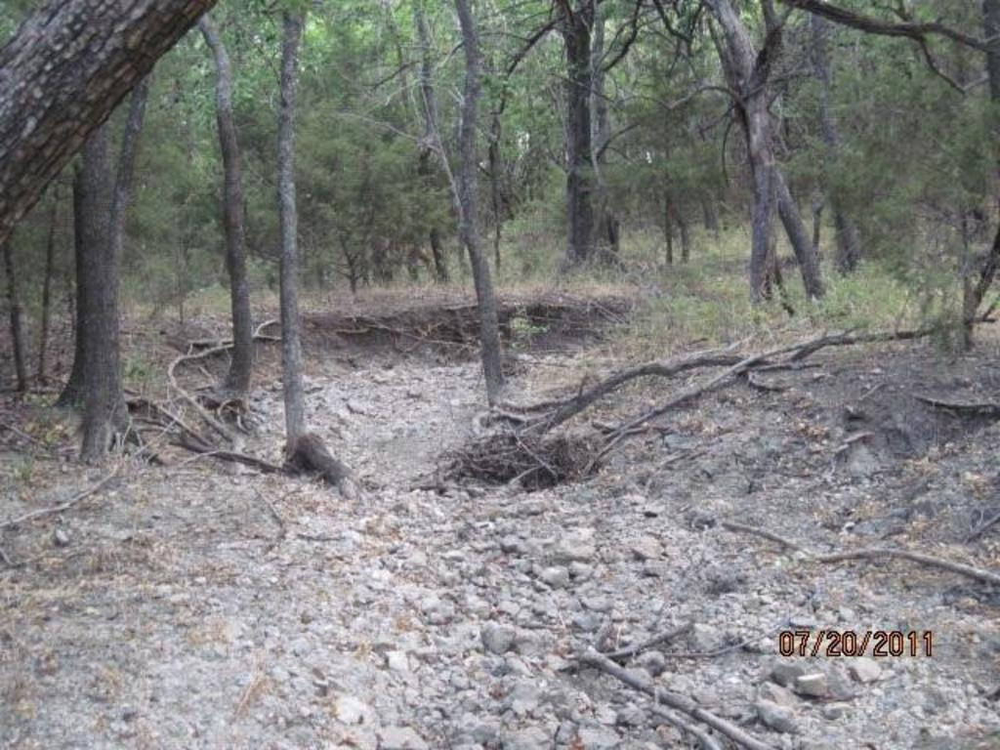

Experience
Long-standing work with the Fort Worth District of the U.S. Army Corps of Engineers and partners across Texas.
General achievements
- Excellent, long-standing rapport with the Fort Worth District of the U.S. Army Corps of Engineers.
- Secured 200+ Section 404 permits, including Nationwide, Individual, Regional General Permits, and Letters of Permission.
- Identified Nationwide Permit authorizations that did not require a formal application package.
- Helped design projects so jurisdictional features were avoided — often eliminating the need for Section 404 authorization or compensatory mitigation.
- Assisted countless private developers and 20+ municipalities in obtaining Corps authorization.
- Routinely coordinates with EPA, TCEQ, U.S. Fish & Wildlife Service, Texas Parks & Wildlife, and the Texas Historical Commission.

Example projects
- Due diligence resource assessment, BLM coordination, threatened and endangered species consultation, and cultural resources assistance for a proposed well pad in Tarrant County, Texas.
- Preliminary wetlands determination, delineation, endangered species investigation, water quality certification, cultural resources assistance, wetlands permitting, and on-site mitigation design/monitoring for a 130-acre private lake in Grimes County, Texas.
- Wildlife habitat analysis, tree inventory, limited wetlands assessment, endangered species investigation, and cultural resources assessment for a permanent easement on Corps property at Joe Pool Lake, Grand Prairie, Texas.
- Wetlands determination, delineation, permitting, mitigation consulting, and permit compliance for a golf course redesign in Dallas, Texas.
- Wetlands determination, delineation, consulting, cultural resources assistance, and permitting for a residential development in Collin County, Texas.